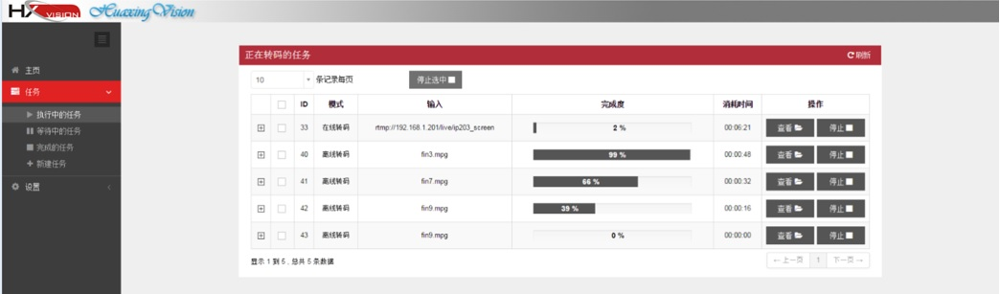
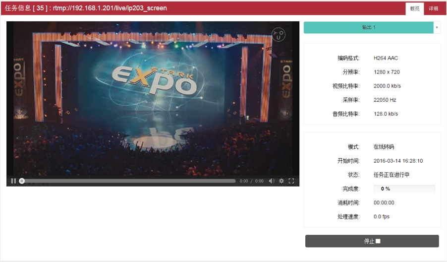
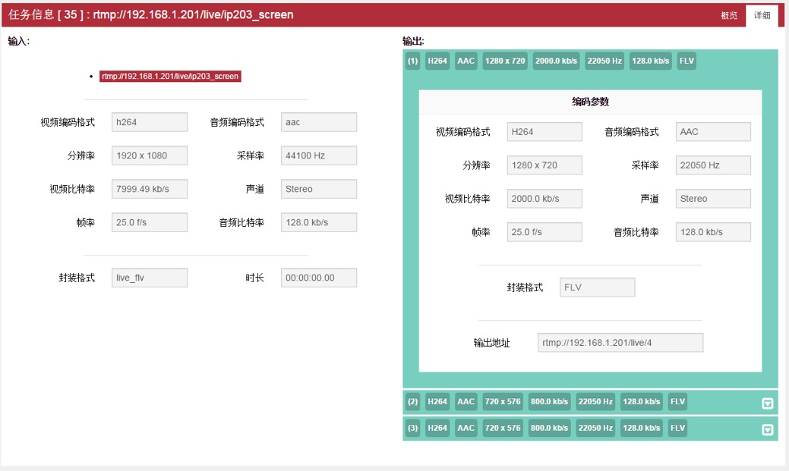
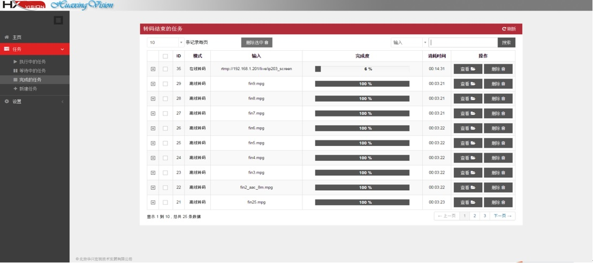

对执行中的任务和已完成的任务，用户均可以方便的查看任务信息，包括运行状态、参数配置；停止或删除任务等。
1. 管理执行中的任务
系统菜单（图1-1）中选择“执行中的任务”进入执行中的任务列表页面，图3-1，可停止执行中的任务或查看执行中的转码任务的信息。选择需要查看的具体任务，进入任务信息概览页面，图3-2。页面左侧为转码视频播放窗口，右侧为任务信息的概览。转码任务支持一路输入多路输出，点击青色输出条处的三角可选择查看不同输出。点击页面中的“详细”按钮可查看转码详细参数，页面如图3-3所示。
 图3-1.执行中的任务列表页面
 图3-2.任务信息概览页面
 图3-3. 执行中任务详细参数页面
2. 管理已完成任务
系统菜单（图1-1）中选择“完成的任务”可进入图3-4所示页面管理所有已完成的转码任务，包括任务信息查看和任务删除。点击任务对应的“删除”按钮可删除完成任务；点击“查看”按钮进入图3-2所示任务信息概览页面，可查看任务的概览及详细信息。
 图3-4 完成任务列表页面